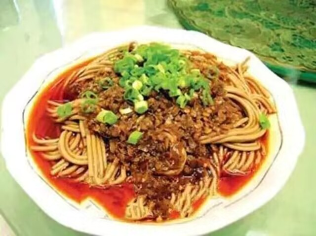
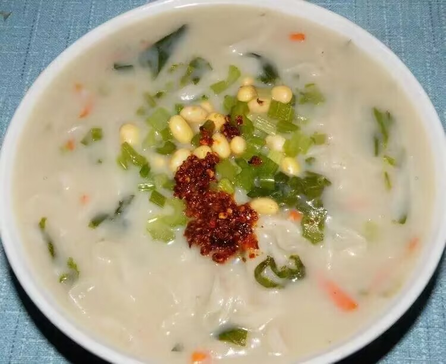

全部分类
热门搜索
鲤鱼焙面是“糖醋软溜鱼焙面”的简称，它是河南开封当地一道著名的汉族菜肴。来开封旅游不品尝一下糖醋软溜鱼焙面，那是一件非常遗憾的一件事。糖醋软溜鱼焙面是由糖醋熘鱼和焙面两道名菜配制而成。
河南烩面
河南烩面，“中国十大面条”之一，有着4000年的历史。是一种荤、素、汤、饭聚而有之的传统风味小吃，以味道鲜美，经济实惠，享誉中原，遍及全国。烩面是以优质高筋面粉为原料，辅以高汤及多种配菜，一种类似宽面条的面食。汤好面筋，营养高。
郏县饸饹面 郏县饸饹面是一道用料考究、独具特色，已有千年历史的风味小吃，简称郏县饸饹。清末，始以小麦面替代荞麦面，口感营养更胜一筹。饸饹面,古称"河漏",又称"活络".为北方及西北地区风行的面食,历史悠久,早在1400多年前,先人就用牛角钻6-7个小孔,孔如粗麻线大小,面糊放入牛角内,落入沸水锅中煮成面条。
蒸面
河南蒸面是一道非常著名的汉族传统小吃。在河南坊间流行的蒸面，也称作卤面。先将鲜面条裹油放入蒸笼蒸熟，再加青菜配以调料焖炒或者二次蒸制，以达到入味却还劲道的效果。
鲤鱼焙面鲤鱼焙面是“糖醋软溜鱼焙面”的简称，它是河南开封当地一道著名的汉族菜肴。来开封旅游不品尝一下糖醋软溜鱼焙面，那是一件非常遗憾的一件事。糖醋软溜鱼焙面是由糖醋熘鱼和焙面两道名菜配制而成。
粉浆面条 粉浆面条是起源于河南省方城县的传统小吃，当时是以豌豆粉浆面条著称，历史悠久。制作粉浆面条的原料一般有芹菜，煮熟的花生米，细面条，煮熟的黄豆，炒制过的面粉，芝麻盐，花生碎，浆水等。 粉浆面条制作简单，酸味独特，容易消化，老人和小孩都爱吃。